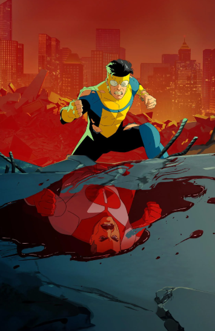
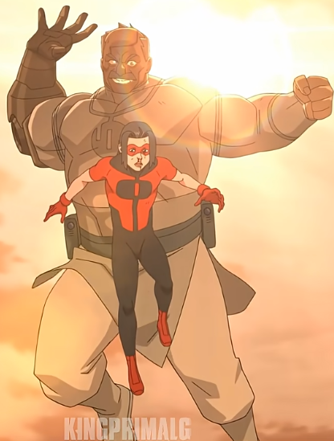

Una serie animada de superhéroes llena de acción y drama
Invencible sigue la historia de Mark Grayson, un adolescente cuyo padre es el superhéroe más poderoso del planeta. A medida que desarrolla sus propios poderes, descubre que ser héroe no es tan simple como parece.

La serie combina combates intensos con decisiones difíciles, mostrando un lado más realista y brutal del mundo de los superhéroes.
